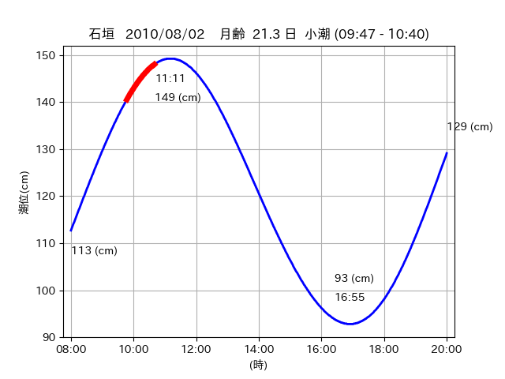

<!DOCTYPE html>
<html>
<head>
    
    <meta http-equiv="content-type" content="text/html; charset=UTF-8" />
    
        <script>
            L_NO_TOUCH = false;
            L_DISABLE_3D = false;
        </script>
    
    <style>html, body {width: 100%;height: 100%;margin: 0;padding: 0;}</style>
    <style>#map {position:absolute;top:0;bottom:0;right:0;left:0;}</style>
    <script src="https://cdn.jsdelivr.net/npm/leaflet@1.9.3/dist/leaflet.js"></script>
    <script src="https://code.jquery.com/jquery-3.7.1.min.js"></script>
    <script src="https://cdn.jsdelivr.net/npm/bootstrap@5.2.2/dist/js/bootstrap.bundle.min.js"></script>
    <script src="https://cdnjs.cloudflare.com/ajax/libs/Leaflet.awesome-markers/2.0.2/leaflet.awesome-markers.js"></script>
    <link rel="stylesheet" href="https://cdn.jsdelivr.net/npm/leaflet@1.9.3/dist/leaflet.css"/>
    <link rel="stylesheet" href="https://cdn.jsdelivr.net/npm/bootstrap@5.2.2/dist/css/bootstrap.min.css"/>
    <link rel="stylesheet" href="https://netdna.bootstrapcdn.com/bootstrap/3.0.0/css/bootstrap-glyphicons.css"/>
    <link rel="stylesheet" href="https://cdn.jsdelivr.net/npm/@fortawesome/fontawesome-free@6.2.0/css/all.min.css"/>
    <link rel="stylesheet" href="https://cdnjs.cloudflare.com/ajax/libs/Leaflet.awesome-markers/2.0.2/leaflet.awesome-markers.css"/>
    <link rel="stylesheet" href="https://cdn.jsdelivr.net/gh/python-visualization/folium/folium/templates/leaflet.awesome.rotate.min.css"/>
    
            <meta name="viewport" content="width=device-width,
                initial-scale=1.0, maximum-scale=1.0, user-scalable=no" />
            <style>
                #map_77763ae66377e73fb98fb2644494dd6e {
                    position: relative;
                    width: 2048.0px;
                    height: 1600.0px;
                    left: 0.0%;
                    top: 0.0%;
                }
                .leaflet-container { font-size: 1rem; }
            </style>
        
</head>
<body>
    
    
            <div class="folium-map" id="map_77763ae66377e73fb98fb2644494dd6e" ></div>
        
</body>
<script>
    
    
            var map_77763ae66377e73fb98fb2644494dd6e = L.map(
                "map_77763ae66377e73fb98fb2644494dd6e",
                {
                    center: [24.214, 124.003],
                    crs: L.CRS.EPSG3857,
                    ...{
  "zoom": 12,
  "zoomControl": true,
  "preferCanvas": false,
}

                }
            );

            

        
    
            var tile_layer_4a1d02bd4c74f8ead5a0da4b906d3228 = L.tileLayer(
                "https://cyberjapandata.gsi.go.jp/xyz/seamlessphoto/{z}/{x}/{y}.jpg",
                {
  "minZoom": 0,
  "maxZoom": 18,
  "maxNativeZoom": 18,
  "noWrap": false,
  "attribution": "\u5730\u7406\u9662\u5730\u56f3",
  "subdomains": "abc",
  "detectRetina": false,
  "tms": false,
  "opacity": 1,
}

            );
        
    
            tile_layer_4a1d02bd4c74f8ead5a0da4b906d3228.addTo(map_77763ae66377e73fb98fb2644494dd6e);
        
    
            var marker_c4f8f57b9edcbbc448bee1e7c0b1674b = L.marker(
                [24.2123, 124.0211],
                {
}
            ).addTo(map_77763ae66377e73fb98fb2644494dd6e);
        
    
            var icon_756f2a92585105ab628169336321d345 = L.AwesomeMarkers.icon(
                {
  "markerColor": "orange",
  "iconColor": "white",
  "icon": "info-sign",
  "prefix": "glyphicon",
  "extraClasses": "fa-rotate-0",
}
            );
        
    
        var popup_5cb8e35f689bb0cce52dc8f046c35a39 = L.popup({
  "maxWidth": "100%",
});

        
            
                var html_9a83e2d206dcd4dc23bc8c7921cb0586 = $(`<div id="html_9a83e2d206dcd4dc23bc8c7921cb0586" style="width: 100.0%; height: 100.0%;"><table><tr><td></td></tr><tr><td><center>20100802 No.1 </center></table></td></tr></table</div>`)[0];
                popup_5cb8e35f689bb0cce52dc8f046c35a39.setContent(html_9a83e2d206dcd4dc23bc8c7921cb0586);
            
        

        marker_c4f8f57b9edcbbc448bee1e7c0b1674b.bindPopup(popup_5cb8e35f689bb0cce52dc8f046c35a39)
        ;

        
    
    
                marker_c4f8f57b9edcbbc448bee1e7c0b1674b.setIcon(icon_756f2a92585105ab628169336321d345);
            
    
            var poly_line_4af0cd29393df05b258a3af59faf715c = L.polyline(
                [[24.2123, 124.0211], [24.2168, 124.0282]],
                {"bubblingMouseEvents": true, "color": "#FF00FF", "dashArray": null, "dashOffset": null, "fill": false, "fillColor": "#FF00FF", "fillOpacity": 0.2, "fillRule": "evenodd", "lineCap": "round", "lineJoin": "round", "noClip": false, "opacity": 1.0, "smoothFactor": 1.0, "stroke": true, "weight": 3}
            ).addTo(map_77763ae66377e73fb98fb2644494dd6e);
        
    
            var marker_4e9d5fa1b9820c386d698880676fb7df = L.marker(
                [24.2099, 124.0139],
                {
}
            ).addTo(map_77763ae66377e73fb98fb2644494dd6e);
        
    
            var icon_7d1e8107d2d45dbddf545becf2e92281 = L.AwesomeMarkers.icon(
                {
  "markerColor": "orange",
  "iconColor": "white",
  "icon": "info-sign",
  "prefix": "glyphicon",
  "extraClasses": "fa-rotate-0",
}
            );
        
    
        var popup_7e5ad58683dc1819370f9d04047fe951 = L.popup({
  "maxWidth": "100%",
});

        
            
                var html_7b9dc9441ef542fad05423daa9ca8da7 = $(`<div id="html_7b9dc9441ef542fad05423daa9ca8da7" style="width: 100.0%; height: 100.0%;"><table><tr><td></td></tr><tr><td><center>20100802 No.2 </center></table></td></tr></table</div>`)[0];
                popup_7e5ad58683dc1819370f9d04047fe951.setContent(html_7b9dc9441ef542fad05423daa9ca8da7);
            
        

        marker_4e9d5fa1b9820c386d698880676fb7df.bindPopup(popup_7e5ad58683dc1819370f9d04047fe951)
        ;

        
    
    
                marker_4e9d5fa1b9820c386d698880676fb7df.setIcon(icon_7d1e8107d2d45dbddf545becf2e92281);
            
    
            var poly_line_3fd1354463e25e0781e69f28d1f7af39 = L.polyline(
                [[24.2099, 124.0139], [24.2143, 124.0223]],
                {"bubblingMouseEvents": true, "color": "#FF00FF", "dashArray": null, "dashOffset": null, "fill": false, "fillColor": "#FF00FF", "fillOpacity": 0.2, "fillRule": "evenodd", "lineCap": "round", "lineJoin": "round", "noClip": false, "opacity": 1.0, "smoothFactor": 1.0, "stroke": true, "weight": 3}
            ).addTo(map_77763ae66377e73fb98fb2644494dd6e);
        
    
            var marker_482fe9024db61715d55d9531e252ee81 = L.marker(
                [24.2164, 123.9988],
                {
}
            ).addTo(map_77763ae66377e73fb98fb2644494dd6e);
        
    
            var icon_d1f6bbc19ead88d6d6a6b65875df655a = L.AwesomeMarkers.icon(
                {
  "markerColor": "orange",
  "iconColor": "white",
  "icon": "info-sign",
  "prefix": "glyphicon",
  "extraClasses": "fa-rotate-0",
}
            );
        
    
        var popup_274a94b00a4b8366a81f64aa97355c54 = L.popup({
  "maxWidth": "100%",
});

        
            
                var html_e2b883ebcf64f3dc0da7783a26269ace = $(`<div id="html_e2b883ebcf64f3dc0da7783a26269ace" style="width: 100.0%; height: 100.0%;"><table><tr><td></td></tr><tr><td><center>20100802 No.3 </center></table></td></tr></table</div>`)[0];
                popup_274a94b00a4b8366a81f64aa97355c54.setContent(html_e2b883ebcf64f3dc0da7783a26269ace);
            
        

        marker_482fe9024db61715d55d9531e252ee81.bindPopup(popup_274a94b00a4b8366a81f64aa97355c54)
        ;

        
    
    
                marker_482fe9024db61715d55d9531e252ee81.setIcon(icon_d1f6bbc19ead88d6d6a6b65875df655a);
            
    
            var poly_line_33b98ce96c7319a46e977eabb1e19451 = L.polyline(
                [[24.2164, 123.9988], [24.2108, 124.0068]],
                {"bubblingMouseEvents": true, "color": "#00FFFF", "dashArray": null, "dashOffset": null, "fill": false, "fillColor": "#00FFFF", "fillOpacity": 0.2, "fillRule": "evenodd", "lineCap": "round", "lineJoin": "round", "noClip": false, "opacity": 1.0, "smoothFactor": 1.0, "stroke": true, "weight": 3}
            ).addTo(map_77763ae66377e73fb98fb2644494dd6e);
        
</script>
</html>